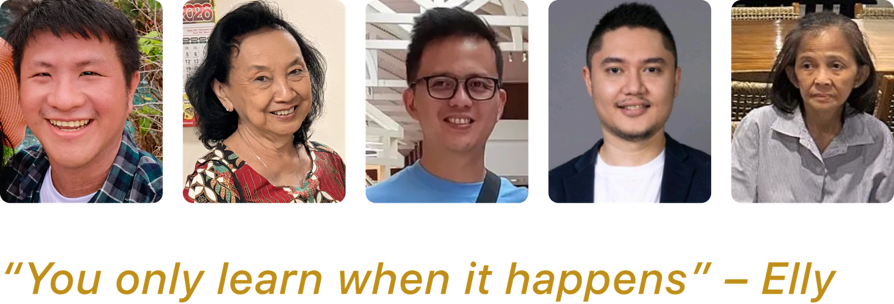
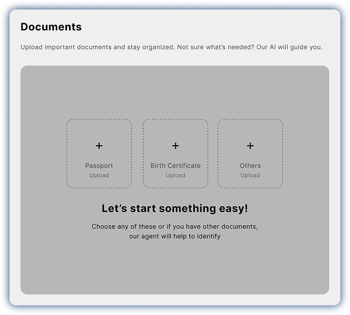
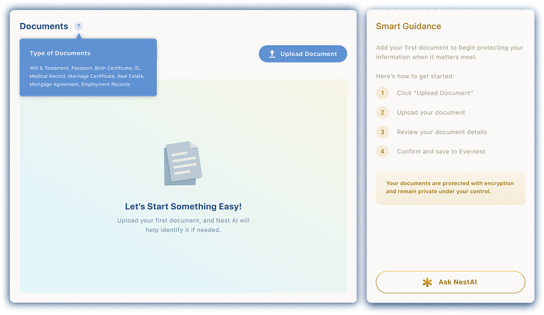
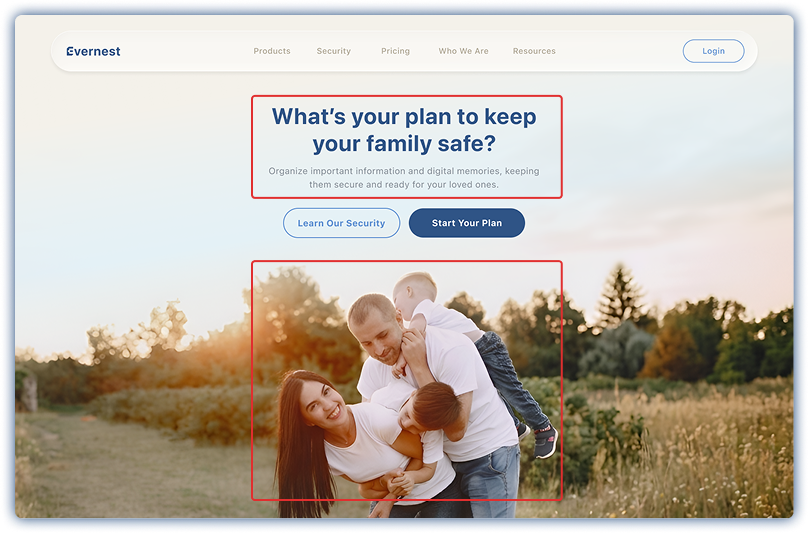
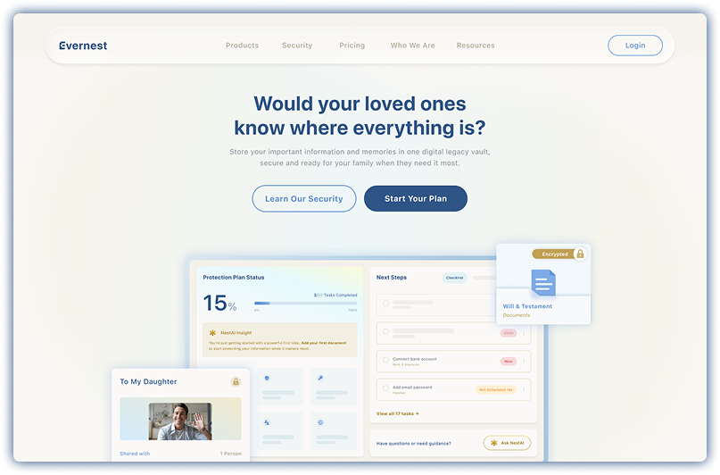
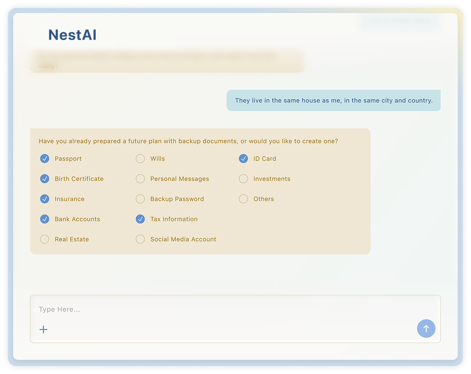
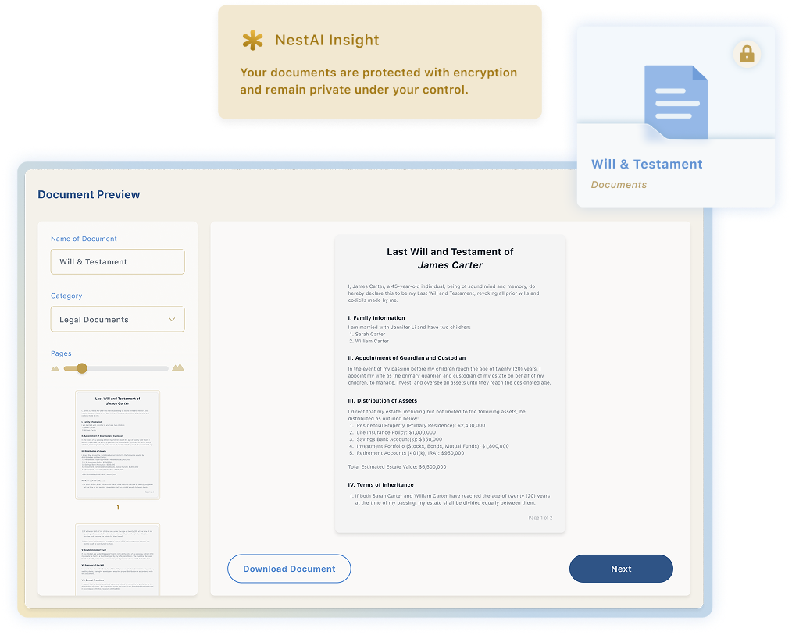
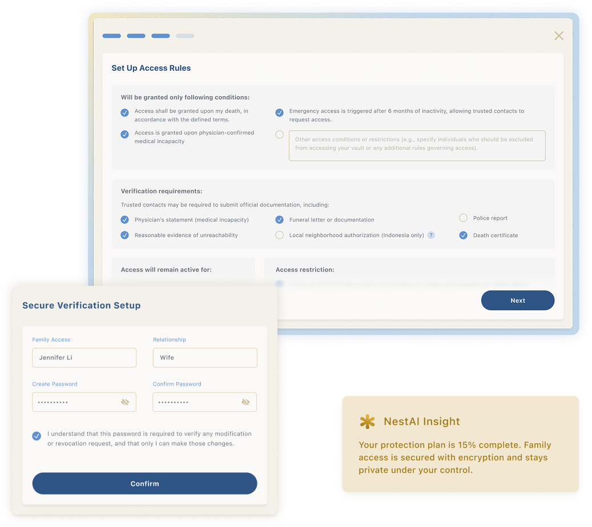
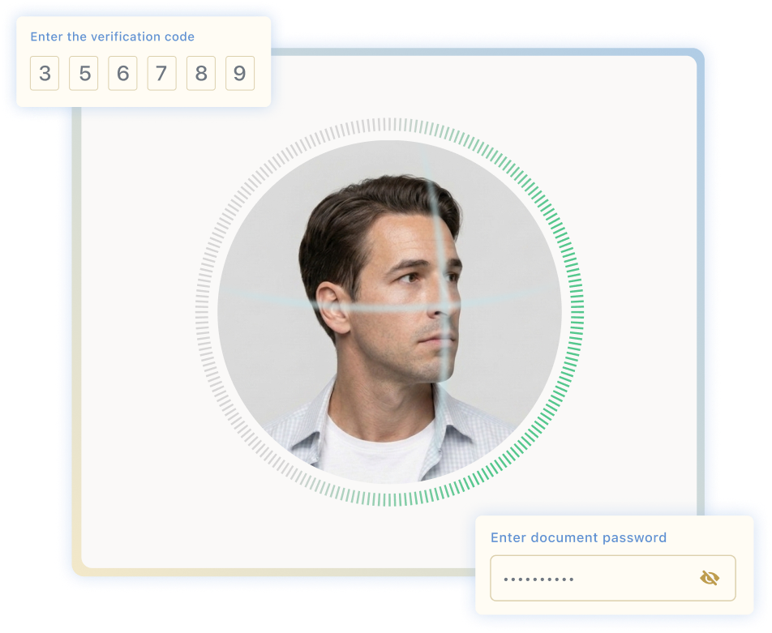

Evernest
A secure digital legacy vault

- Role
- Product designer
- Platform
- Web app
- Year
- 2026
Evernest is a digital legacy platform that helps people organize, protect, and share their most important life information. Simple, step-by-step guidance built on clarity, trust, and family protection lets users organize personal and financial information, assign trusted family members for access, and leave personal messages and instructions for the people they love.


The Story That Started All
This is Brian, my cousin. He passed away suddenly in another country. Alone. No documents. No messages. Nothing.
It took us two years to sort out what he left behind. That’s why Evernest exists. And what happened to Brian’s family happens more than you think.
This happens more than you think
From the survey, three out of four hadn’t organized their important documents or passwords. Half hadn’t stored them safely, and over a third didn’t know where to start. The numbers showed me the problem, but I wanted to understand how people felt.
have not organized important documents or password
have not taken action to store important documents safely
do not know where to start or what to prepare
Five people. Five different losses. The same chaos.
So I talked to five people who lost someone suddenly. Five different losses, five different stories, the same chaos.

The challenge is not information, but organization and access
Every story had the same root. It’s not that people lack information.
Information is scattered and hard to find.
There’s no easy way to access it in an emergency.
Tools are too fragmented or too complicated.
There’s no clear guide on what to prepare.
When no one prepares
When people don’t prepare ahead of time, their families may not know where to find important information or how to access their accounts and documents. They may struggle to figure out what needs to be done and who to contact. If family members live in different countries, the process becomes even more difficult. When the unexpected happens, families are left dealing with confusion and stress at a time when they need things to be clear and simple.
Families struggle to find important information
Accounts and passwords are missing
Legal and financial processes are confusing
Preparation is avoided even when it is needed
I’ll be honest: this isn’t easy to solve. Death is uncomfortable to talk about. People think there’s still time. The legal system feels complex. And many don’t fully trust digital tools with something this important.
A legal expert I spoke with put it simply: most of her clients wait until a crisis hits before they prepare. With today’s technology, this should be easier, but trust is hard to earn, even offline. People need to trust the tools, the legal process, and even the family members they assign. So the design had to earn trust, not just offer features.
Death is culturally uncomfortable to talk
People assume “there is still time”
Legal and financial system feel complex
Digital tools are not fully trusted
So, I asked: What if preparation was about family, not death?
How might we help people securely organize and share their most important information?
Addressing document upload and privacy concern
This upload screen changed three times. In early testing, people didn’t know whether to click the empty box, asked how they’d know their documents were safe, and first-time users weren’t sure which documents they could add.
So I added a clear upload button, turned the empty state into a static image, and added a panel explaining that everything is encrypted and stays under their control. A question mark shows the accepted document types. I kept that list out of the empty state on purpose: it would crowd the screen, and NestAI identifies documents anyway. The feedback: “It’s better now.”
Before

After

- Not sure what and where to upload of documents.
- Concern about safety.
- After changed, no more questions about safety or which type of documents they can add.
It’s almost done but..
“It felt like an insurance company”
This was the hardest moment, and it came late. I’d worked to turn the stigma around, so people see this as preparation, not the end of life. But testers looked at the landing page and said it felt like an insurance company, exactly the feeling I was trying to avoid. They weren’t even sure it was a digital legacy vault.
So I replaced the family photo and the line “What’s your plan to keep your family safe?” with the Evernest product itself and a question: “Would your loved ones know where everything is?” Now visitors see what the product is first, and a question that makes them think.
Before

After

Designing for
Two of these mattered most: trust through transparency, and guidance over forms. People won’t store what matters most until they feel safe, and they won’t finish if they’re buried in forms.
Success meant people could finish setup on their own, always knew what to do next, and felt confident their information was safe. And I framed it all as legacy planning, not end-of-life preparation, because people avoid the second one.
Clarity over complexity through simple guides
Trust through control and transparency
Guidance over overwhelming forms
A protection for the family
Your setup is shaped around you, not a blank page
Remember James? He didn’t know where to start. So before anything else, NestAI asks what he needs. Instead of a blank page, he gets a setup shaped around him, with clear guidance on what to prepare first.

Structuring scattered information
This is how Evernest starts. You upload a document, and NestAI identifies it for you. Then you take control: you set a password for that document, one of Evernest’s layers of protection. It’s saved in your dashboard, where you can find it again. No more hunting for documents.

- Upload
- NestAI identify document
- Create password to your document
- Saved in document dashboard
Ensuring the right people can access information
You assign trusted people, set emergency rules, and add a password as another layer of protection for that specific contact. Most importantly, you stay in control.

- Assign trusted people
- Set emergency rules
- Create password to your document
- Saved in contact dashboard
Messages that stay
You can record video, voice, or text for the people you love. The hardest case was minors. A guardian must be assigned, and the messages unlock when the child turns 18.
- Record a message
- Assign a trusted guardian
- Set emergency rules
- Create a password
- Saved in dashboard
Your control, protected with every update
Everything you’ve just seen is protected by one rule. Whenever you update a document, change a trusted person, or edit a message, Evernest asks you to verify three times: a 2FA code, face recognition, and the password you set for that document.
James told me he worried about privacy, and early testers asked how they’d know their documents were safe. This is the answer: your family can be given access, but no one can change anything without you.

- 2FA code
- Face recognition
- Document password
In their words
One participant in my last test said:

“When my father-in-law passed suddenly, we didn't know where to begin. No documents, no instructions, just grief and confusion. Evernest would give me a way to actually do something about it, for my wife, my future kids, and everyone I love.”– Elvin, Lost his father-in-law in an accident
What Evernest taught me
Three things I’m taking into my next project. Guidance is essential: without clear direction, people hesitate or give up. Keep it simple on the surface and structured underneath: when my landing page was unclear, people couldn’t tell what the product was. And security has to be visible: people won’t store what matters most until they can see how it’s protected.
Step-by-step guidance helps users get started
Keep the experience simple, not the system
Visible security builds trust and helps users feel safe